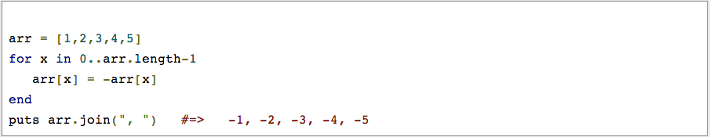
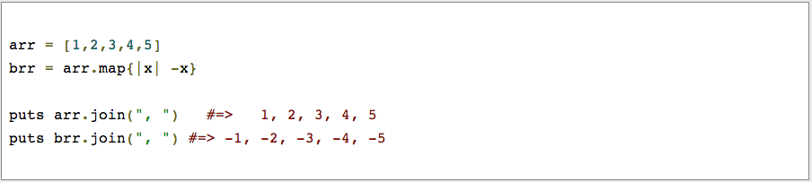
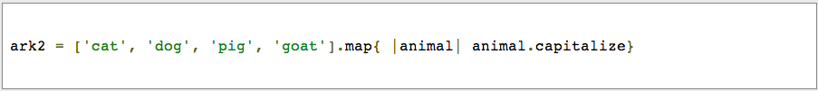
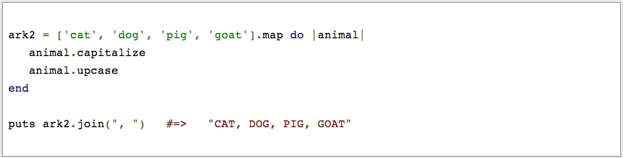

Technical Blog: Enumerable Methods - Ruby
August 25th, 2014
Enumberable Methods: Using .map
Enumerables in Ruby provide a set of methods to traverse, search, sort and manipulate collections of elements.
What does .map do?
The map method takes an enumerable object and a block, and runs the block for each element, outputting each returned value from the block (the original object is unchanged unless you use map!)
You can transfer each element in an array by using a for loop. In the example below, we are iterating through each element and making it print as a negative number:
However, what if we didn't want to modify arr ? What if you just wanted a transformed copy of arr without altering the original? We can now use the enumerable "map" (also known as "collect"):
The map method returns a copy of the its invoking collection, which is why we can immediately chain the join method to its result, brr. Meanwhile, the original arr retains its unaltered values. Like "each" (in fact, map, and all the other Enumerable iterating methods are based off of each), map is invoked by a collection and accepts a block of code that acts upon each element in that collection. The main difference is that map returns that transformed collection:
There is no need to initialize ark2 on its own line. As with methods, the last line in the code block is the value that will be part of the transformed collection.
